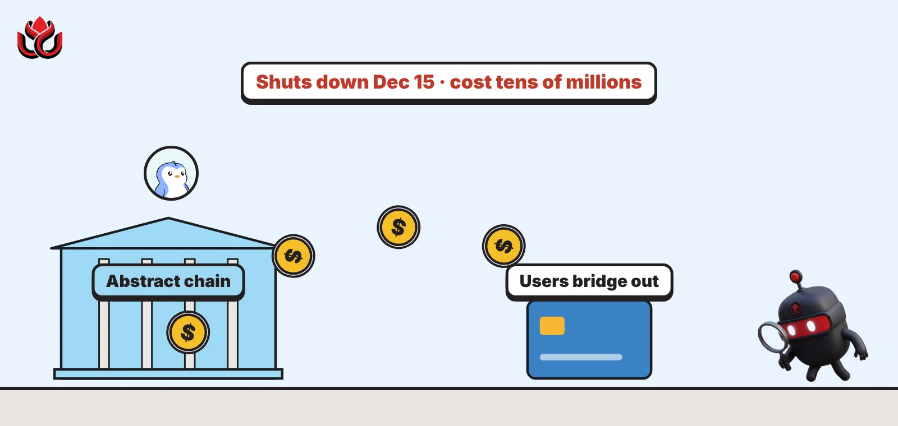
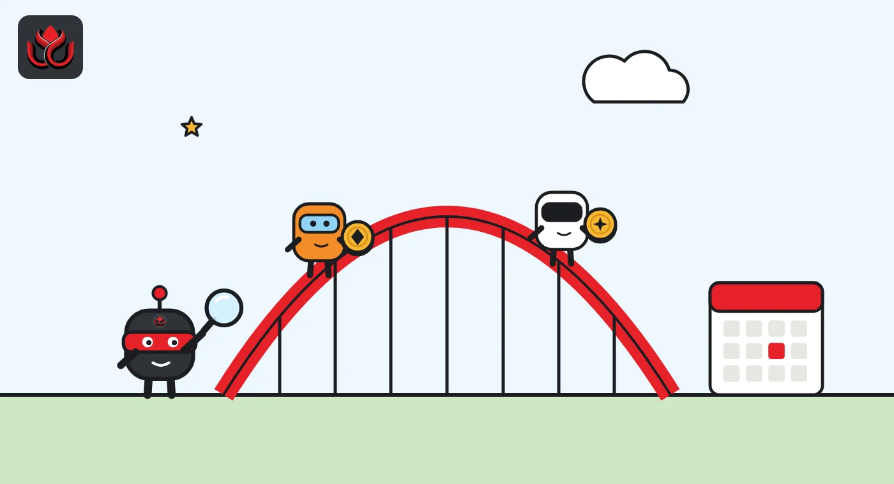
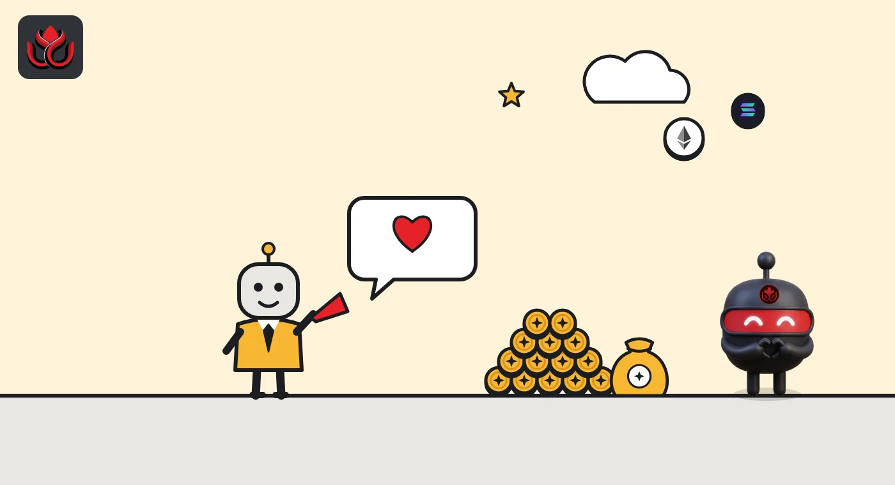

Pudgy Penguins' owner shuts Abstract after losing tens of millions. Exit by December 15
Igloo says two years of funding its consumer blockchain cost it tens of millions of dollars without finding product-market fit. Users must bridge out by December 15 or lose access, and the company is going back to the penguins.

Key points
- Abstract, the Ethereum layer 2 built by Pudgy Penguins owner Igloo, said on October 6, 2026, that it is shutting down.
- Bridge your funds out through migrate.abs.xyz or native-bridge.abs.xyz before December 15, 2026, or they will be inaccessible.
- CEO Luca Netz said Igloo lost tens of millions of dollars over two years, chose not to launch a token, and will refocus on Pudgy Penguins and PENGU.
What Abstract announced
Abstract, the consumer blockchain built and funded by Pudgy Penguins owner Igloo Inc., is shutting down on December 15, 2026. The team said so in a long post on X on the afternoon of October 6, 2026, ET, and anything left on the chain after the deadline will be out of reach. CEO Luca Netz confirmed the news in his own post a few minutes later.
Abstract is a layer 2: a separate network that processes transactions cheaply and settles them back to Ethereum. It was pitched as a home for games, NFTs and social apps. Abstract said more than 144 apps were deployed on it and that brands such as Red Bull Racing and Disney used it, which helped bring in more than 400,000 users. Netz said the chain handled more than 300 million transactions.
Igloo got into the chain business when it bought Frame in the summer of 2024, Netz wrote. The plan was to build the main blockchain for consumer crypto, using the reach Pudgy Penguins had built with mainstream audiences.
What users need to do
Move early. Abstract said any funds not bridged off the chain by December 15 will be inaccessible.
There are two official exits, according to the announcement. The first is a Migration Hub at migrate.abs.xyz. The second is the native bridge at native-bridge.abs.xyz, where users should expect a delay of about three hours. Abstract's engineering and ecosystem team said it will help projects built on Abstract move to other chains.
The team also warned about impersonators, fake migration sites and direct messages from people claiming to represent Abstract. Users should only use the official links and check them against Abstract's Discord and other official channels.

Why Igloo gave up
Both posts give the same core reasons. Abstract said its growth stalled because of a limited DeFi ecosystem, thin liquidity on the chain, little crossover with institutions and a smaller budget than rival chains. It said it spent the last 12 months trying to make the chain scale before deciding to close it.
Netz was more direct. He said few people knew that Igloo had been funding Abstract for the last 18 months. After losing tens of millions of dollars over two years, the chain still had not found product-market fit, he wrote, and the market had less appetite for what the team built. He also pointed to high costs. Igloo could no longer justify taking money from the Pudgy Penguins business, he said.
Netz said Igloo could have launched a token or held an ICO to raise money, but chose not to. In his words, "A token only works if there is something driving demand to it."
Back to the penguins
Igloo's focus is now Pudgy Penguins, the Pudgy NFTs and the PENGU token, Netz said. Those assets have lost much of their value since late 2024.
PENGU traded at about $0.0073 on November 2, 2026, with a market value of about $460 million, according to CoinGecko. That is about 89% below its all-time high of $0.06845.
The NFTs have fallen further. The cheapest Pudgy Penguin cost 2.43 ETH (about $5,600) on November 2, 2026, down 93.3% from the record floor of 36.33 ETH set on December 17, 2024, CoinGecko data shows. The collection has 8,888 NFTs held by about 5,035 wallets.
Pudgy Penguins NFT floor price
ETH
Source: CoinGecko, Pudgy Penguins NFT page (November 2, 2026)

Blur is closing its website too
Abstract is not the only crypto consumer product to close this fall. On October 12, NFT marketplace Blur said its blur.io website will be switched off on November 12, 2026. Blur said only the website is affected: its marketplace contracts keep running on-chain, and the BLUR token still controls the fee switch.
The two cases differ. Blur keeps its contracts alive, so assets and listings remain reachable with other tools. Abstract is closing the whole chain, which is why the bridge deadline matters so much.
In both cases, users were given a date and had to act before the operator stopped supporting the usual way in.
Timeline
Igloo buys Frame and starts building Abstract
Abstract and Luca Netz announce the wind-down
Blur says blur.io closes on November 12
Abstract shuts down; unbridged funds become inaccessible
LC Insight analysis
This section is our reading of the facts above, not a statement of fact.
- We think Abstract's closure says more about app-focused chains than about Pudgy Penguins. A network needs DeFi liquidity and steady fees, and even a famous brand with 400,000 users could not bring either.
- Netz's refusal to launch a token to keep the chain alive deserves credit. A token with nothing driving demand would have shifted the losses onto retail buyers instead of Igloo.
- If you have anything on Abstract, treat December 15 as a hard wall and use only the two official links. Shutdowns attract scam sites, and a missed deadline means lost access.
What's next
- How much value is still bridged on Abstract as the deadline nears
- Which Abstract apps move to other chains, and where
- The PENGU price and Pudgy Penguins floor price after the shutdown
Disclaimer. This article is based on public information and the sources listed below as of the update time shown. It is for information only and is not investment, legal or tax advice. Figures may change as companies and authorities publish new data.